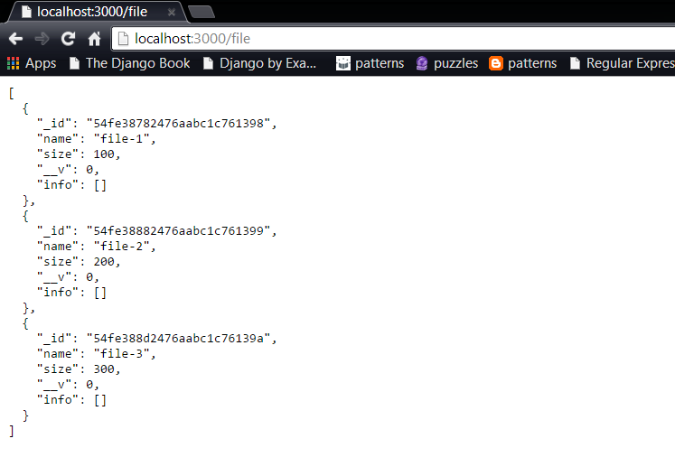

Getting Started with MongoDB and Mongoose
About Experiment
MongoDB
A web application requires some mechanism to store data for it's functionality. This may be information such as
user information, site data, etc.
This requires a persistence storage and MongoDB is one such example. It is a cross-platform NoSQL database that
stores information in the form of JSON based documents with dynamic schemas. It is fast, supports indexing in any
field, supports server side JavaScript execution and Ad-hoc queries.
To run MongoDB, first the database is required to be instantiated. Then, the client must be used in order to perform
subsequent operations. Below are some of the commands to get started:
To list the databases:
show dbs
To use a database:
use database_name
Unlike any other database, MongoDB supports add, remove, update, delete and other such expected operations.

Mongoose
Mongoose is an ORM for MongoDB, written in NODEJS. To interact with the database through the Javascript(Node) application,
we require Mongoose for the connectivity. In the following experiments, we will learn about the application and usage of
Mongoose in the applications.
Source
HTML
References
Prof. Jose's Youtube Channel